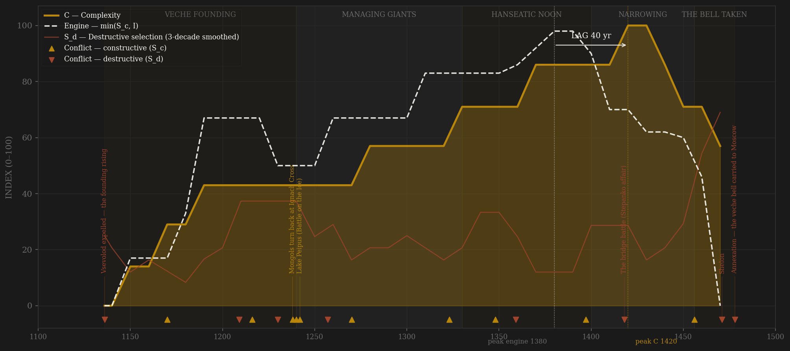
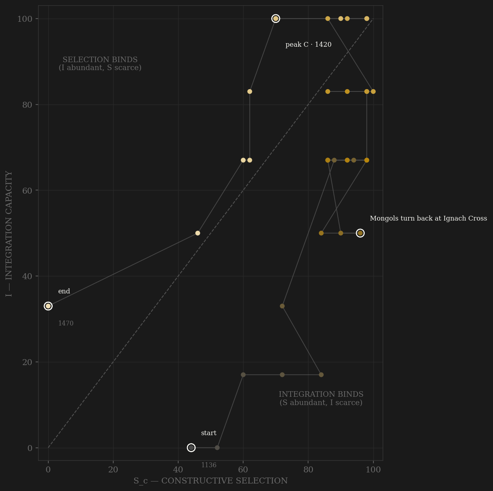

Novgorod is the sample's institutional inversion of everything around it: the same Orthodox-Rus' civilization as Moscow, running the opposite operating system. The veche hired its princes by written contract — the oldest surviving ryad dates to 1264 — and expelled them for breach roughly fifty-eight times in the first two centuries: the ultimate within-rules executive turnover. The posadnik succession is reconstructable name by name from the chronicle lists (Yanin did it); the archbishop was chosen BY LOT from three names laid on the altar of St Sophia, first attested 1193 — sortition at the apex of the constitution, unique in the sample. And its complexity is MEASURED as almost nowhere else in the medieval world: ~1,200 birchbark letters from dendro-dated layers — commercial literacy down to artisans and women, archaeology rather than narrative. The B-channel shows the republic's other genius: managing giants. The Mongols turned back at Ignach Cross in 1238 — Novgorod was NEVER SACKED — and Alexander Nevsky's submission to the census bought the machinery's survival for the price of tribute: a B-management masterstroke bracketed by the showcase frontier victories at the Neva (1240) and Lake Peipus (1242). The v2 engine peaks in the 1380s — the widest clan rotation of the century riding the Hansa apex — and complexity answers at +40, PASS, in the 1420s: icon school at zenith, Euthymius' Faceted Palace rising, the letters still dense in the ground. But the ladder was already narrowing: Yanin's concentration tables show the 1354 and 1410s reforms multiplying offices while ever-fewer clans fill them — the standard rentier arc, documented in office-lists — and the 1418 bridge battle shows assembly politics degenerating into street war. Then Shelon, July 1471: the core army destroyed, posadnik Boretsky executed; and in January 1478 Ivan III abolishes the veche and has THE BELL TAKEN DOWN AND CARRIED TO MOSCOW — the coordination machinery literally removed, the terminal exhibit of the whole framework. The deportations of the 1480s are post-mortem confirmation.

The trajectory enters mid-field — the 1136 rising inherits a working city, not a wasteland — and climbs both axes through the treaty decades: the Peterhof kontor, the prince-contract system, the archbishop's lot. It crosses into integration-binds territory early and stays there: like Venice (its closest cousin in the sample), Novgorod rarely lacked coordination — the Baltic-Volga axis, the pyatiny, the fur-tribute network to the Urals held an empire of the north together by trade instead of garrison. The Mongol decade barely dents the path: the unsacked node keeps trading while the Volga world burns — the phase portrait's quietest catastrophe. The republic's noon is a long high plateau (1360s-1420s) with selection and integration both elevated; then the trajectory does what H-RENT-001 predicts: it slides down the SELECTION axis first — the boyar circle closing through the 1430s-1460s while integration and complexity still hold — before Moscow's blade cuts the path mid-altitude. Like Athens and Sicily it dies at height, by external decree; unlike them, its killer diagnosed the framework correctly and removed the machinery itself: the bell, then the elite.
Coded by locus and target, never by outcome. Novgorod's ledger turns on one great split: the veche's ROUTINE violence — depositions, expulsions by grievance charter, even the armed 1270 confrontation settled by treaty — codes as channel C, competition within rules; the risings that plundered houses and set the ends against each other (1136, 1209, 1228-30, the census riots, 1342, 1359) code S_d, and the 1418 bridge battle — konchansky levies facing off on the Volkhov bridge until the archbishop walked between them with the cross — is the exhibit of the one degenerating into the other. The Mongol entry is the boldest call and the best-grounded: suzerainty WITHOUT sack. The horde never reached the city; the census was riotously accepted and the tribute paid; no baskak garrison sat inside the walls — tribute is priced rivalry (B), while the riots against the census are S_d. The 1170 Bogolyubsky siege is B by the Hannibal rule — the walls and the machinery held, whatever the blockade later extracted. And the terminal sequence is a locus lesson in itself: Staraya Rusa 1456 and the Yazhelbitsy capitulation are still B — peer contest, core standing — but Shelon 1471 destroys the core army and executes the posadnik, and 1478 is not a battle at all: the machinery is dismantled by decree, the bell hauled south.
| YEAR | CONFLICT | CODE | CODING RATIONALE |
|---|---|---|---|
| 1136 | Vsevolod expelled — the founding rising | Sd | The prince arrested with his family by the assembly and expelled for breach of duty: a machinery seizure that CREATES the contract constitution — founding S_d with a channel-C double-score (NPL s.a. 1136) |
| 1170 | Bogolyubsky's siege repelled | Sc | The Suzdal coalition breaks on the walls (Icon of the Sign) — B by the Hannibal rule; the grain blockade that then forced terms is rivalry priced in bread, not core penetration |
| 1209 | Rising against the Miroshkinichi | Sd | The veche turns on the posadnik clan — houses plundered, estates confiscated by 'vote': a riot wearing procedure's clothes (NPL s.a. 1209) |
| 1216 | Lipitsa | Sc | Novgorod's levy crushes the Suzdal princes in open field — the contract system defended by war and won; the coalition assembled by veche vote |
| 1230 | Famine-plague catastrophe & riots (1228–30) | Sd | Archbishop Arseny driven out by riot as famine scapegoat, courts sacked — internal machinery attacked under subsistence collapse; the 3,030-corpse mass grave loads on E (NPL s.a. 1230) |
| 1238 | Mongols turn back at Ignach Cross | Sc | Torzhok falls but the horde stops ~100 versts short — NOVGOROD NEVER SACKED: suzerainty without core penetration; the tribute that follows is priced rivalry, a B-management masterstroke (Martin ch.6) |
| 1240 | The Neva | Sc | The Swedish landing broken by Alexander — frontier victory; the veche expels him the same winter: no gratitude clause in the contract |
| 1242 | Lake Peipus (Battle on the Ice) | Sc | The Teutonic push broken on the lake — the showcase frontier victory of the series; external locus throughout |
| 1257 | Census riots (1255–59) | Sd | The Horde's enumeration accepted only over risings — posadnik Ananias deposed 1255, the anti-census party suppressed with mutilations: the S_d lands on the internal fight, the tribute itself stays B |
| 1270 | Yaroslav expelled by grievance charter | Sc | The prince faced down and re-hired on stricter terms with the charter surviving — armed but settled within rules: channel C at full function |
| 1323 | Oreshek founded; Treaty of Nöteborg | Sc | The first fixed Swedish border — rivalry priced into a line on the map; the fortress at the Neva source anchors the western axis |
| 1348 | Magnus Eriksson's crusade broken (1348–50) | Sc | Oreshek lost and retaken within the year — the last great Swedish push; Pskov released at Bolotovo the same year by amicable constitutional division |
| 1359 | Slavno rising | Sd | A posadnik election fought with arms across the ends (NPL s.a. 1359) — the office contest breaching the rules; the 1342 Ontsifor-Matfei feud is its rehearsal |
| 1397 | Dvina War won (1397–98) | Sc | Moscow suborns the Dvina colonies; the levy marches north and takes them back — the tribute empire defended (Martin ch.8); the defectors' executions are the empire's discipline, small S_d residue |
| 1418 | The bridge battle (Stepanko affair) | Sd | Konchansky armies face off ON the Volkhov bridge, houses plundered, until Archbishop Simeon walks between them with the cross (NPL s.a. 1418) — assembly politics degenerated into street war: C becoming S_d, the exhibit of the arc |
| 1456 | Staraya Rusa & Yazhelbitsy | Sc | Vasilii II beats the levy and the treaty strips the veche's seal and installs Moscow oversight — peer contest turned existential, but the core still holds: B by locus, the last one |
| 1471 | Shelon | Sd | The core army destroyed by Ivan III's smaller host; posadnik Dmitrii Boretsky executed at Rusa — core defeat, the republic made a dependency (Korostyn) |
| 1478 | Annexation — the veche bell carried to Moscow | Sd | TERMINAL: veche and posadnichestvo abolished by decree, the bell taken down and hauled south (NPL s.a. 1478; Martin ch.9) — the coordination machinery literally removed; the 1480s mass deportations are post-mortem confirmation |
| COMPONENT | GRADE | BASIS |
|---|---|---|
| S_c — channel A, elite-entry (0.40) | ◐ list-counted + ○ intensity | Posadnik succession reconstructed name-by-name (Yanin, Novgorodskie posadniki — turnover countable); boyar clan rotation (Mishinichi-Ontsiforovichi, Boretsky alternation); Ivan's Hundred priced merchant entry; ARCHBISHOP BY LOT from 1193 (Martirii — three names on the altar of St Sophia; Birnbaum ch.4, Paul 2007) = sortition at the apex, unique in the sample. Decay: the 1354 Ontsifor reform and 1410s collegium multiplication read double (more seats AND a narrowing clan pool — both readings Yanin's); his concentration tables document the 15th-c. oligarchic ratchet |
| S_c — channel B, peer rivalry (0.30 HARD CAP) | ○ scholar-coded, event-anchored | Suzdal grain-route pressure (1170 siege = Hannibal rule); Swedish frontier (Neva 1240, Vyborg, Landskrona 1301, Nöteborg 1323, Magnus 1348-50); Teutonic frontier (Peipus 1242, Rakvere 1268); Lithuanian pressure managed by hired princelings; MONGOL SUZERAINTY = tribute WITHOUT core penetration (never sacked — Ignach Cross 1238; Halperin); Moscow = B until 1471. Core defeats excised to S_d: Shelon, the annexation |
| S_c — channel C, within-rules contest (0.30) | ◐ event-counted + ○ intensity | THE VECHE ITSELF, continuous ~340 years; konchansky (borough) representation — five ends, each with its own assembly; prince-contract system: hired by ryad (oldest surviving 1264), expelled ~58 times in the 12th-13th c. (countable from the chronicles); posadnik contests resolved by assembly WHEN bloodless — riot years code S_d (locus rule) |
| S_d — Destructive | ◐ chronicle event-counted | All dated by NPL: 1136 founding rising, 1209 Miroshkinichi, 1228-30 riots, 1255-59 census risings, 1270 confrontation, 1342 and 1359 armed office feuds, 1418 BRIDGE BATTLE, 15th-c. faction street wars, SHELON 1471 (Boretsky executed), 1478 annexation + bell removal; the 1480s deportations post-mortem, outside the grid |
| Sc_v1_combat (frozen synthetic) | ○ scholar-coded | Channel B alone (external-war-only, the prior definition's operative content) — no v1 page ever existed; synthesized per the straight-to-v2 rule (Mughal/Gupta precedent) |
| I — Integration | ◐ treaty-dated + ○ intensity | Hanseatic axis: Gotland/German treaty 1191-92 (oldest surviving Russian-German commercial treaty), PETERHOF KONTOR ~1192, rights fixed by the 1269 treaty — one of the Hansa's four great kontore; the pyatiny five-fold land organization; the fur-tribute network to the Pechora/Yugra frontiers — an empire of the north integrated by trade and tribute, not garrison; grain dependence on the Volga route (every blockade decade shows integration and vulnerability at once) |
| C — Complexity | ● birchbark + ◐ counted + ○ blend | BIRCHBARK LITERACY: ~1,200 letters excavated since 1951 from DENDRO-DATED layers (Yanin & Zaliznyak corpus; Yanin Sci.Am. 1990) — commercial literacy down to artisans and women, archaeologically MEASURED, unique in medieval Europe; Hanseatic trade scale; stone-church building notices from the chronicle (◐ dated — Kalika's kremlin 1331-35, Theophanes' frescoes 1378, the Faceted Palace 1433); the icon school's 15th-c. zenith. Letter counts used as density anchors, not converted to a fabricated per-decade curve — upgrade path in SOURCES.md |
| E — Entropy | ◐ chronicle event-counted | NPL logs them: great fires 1152, 1211 (4,300+ households), 1340; blockade famines 1170, 1215, 1445-46; THE 1230 CATASTROPHE (3,030 corpses in one mass grave, cannibalism reported); Black Death 1352; plagues 1360s, 1417, 1420s; terminal war and confiscations |
| R — Renewal (population) | ○ scholar-coded anchors | CITY population in THOUSANDS (city-state convention, Venice/Athens precedent): ~15k (12th c.) → ~25k (1300) → ~30-35k peak (early 15th c.) → ~30k terminal (Birnbaum ch.2 range); no census exists |
35 decade rows (1136 off-decade founding row — the Vsevolod expulsion IS the founding event, Han convention — then 1140…1470; the 1470 row carries Shelon 1471 and the January 1478 annexation) built by scripts/build_novgorod_sicre.py — a straight-to-v2 contestability build (AMENDMENT_S_definition_v2.md): Sc_constructive = 0.40 elite-entry (posadnik turnover per Yanin's reconstructed succession ◐, clan rotation, Ivan's Hundred priced entry, archbishop-by-lot) + 0.30 peer rivalry (hard cap, locus-cleaned — Mongol suzerainty coded B: tribute without sack) + 0.30 within-rules contest (the veche itself; ~58 prince-expulsions countable ◐); Sc_v1_combat = channel B alone, synthesized per the Mughal/Gupta straight-to-v2 rule (no v1 page ever existed). Channel ledger: data/raw/novgorod/coding_ledger_v2.csv; audit: components_audit.csv; sources + the seven locus decisions: data/raw/novgorod/SOURCES.md. FROZEN-PROTOCOL LAG UNDER BOTH DEFINITIONS (3-decade centered rolling mean, engine=min(Sc,I)): v2 engine 1380 (widest clan rotation of the century × Hansa apex) → C 1420 (icon-school zenith, Faceted Palace, birchbark still dense) = +40 PASS; v1 engine 1300 → C 1420 = +120 PASS (both definitions pass — rare; the Mughal precedent). UNSMOOTHED sensitivity: v2 identical (+40 PASS — smoothing-robust); v1 unsmoothed engine 1260 → C 1420 = +160 LONG (the v1 peak wanders the 1260-1300 Swedish-Teutonic plateau; v2 does not move). At 35 rows no short-series caveat is required (≥25), but note C peaks two rows from the terminal edge — peak C is NOT right-censored: the 1430s-1460s C decline is real (building slows, Hansa frays) and precedes the political death, consistent with the H-RENT-001 shape (channel A falls first, from the 1400s, on Yanin's documented concentration; the sealed prereg is NOT run here — no pooled statistic computed). COMPARATIVE-CHAPTER NOTE (Novgorod vs Moscow): the cleanest same-civilization institutional contrast in the sample — one Orthodox-Rus' polity ran sortition at its apex, hired and fired executives by assembly for ~340 years, and held an empire of the north by trade without garrisons; the other centralized, inherited, garrisoned — and won, then demonstrated the framework's mechanism by REMOVING the loser's coordination machinery (the bell, 1478) and its elite (the deportations, 1480s) rather than absorbing them. Rebuild: ~/grove/venv/bin/python ~/vitalic.stoicism/scripts/build_novgorod_sicre.py, then polity_report.py --slug novgorod